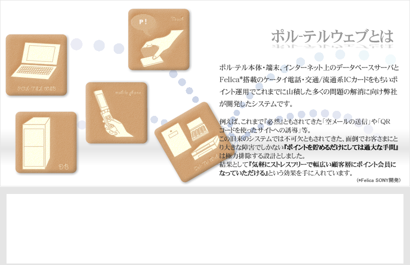

ポル-テルウェブとは
ポル-テル本体・端末、インターネット上のデータベースサーバとソニー開発の＊Felica搭載のケータイ電話・交通/流通系ICカードを用いる事により、これまで必要とされてきた「空メールの送信」や「QRコードを使ったサイトへの誘導」などの面倒でお客さまにとり入会への一つの大きな障害になっていた『ポイントを貯める』だけには大きすぎた手間を一切廃し、幅広い顧客層を気軽にストレスフリーでポイント会員になっていただく事にまず重点を置き、更にポイント運用でこれまで山積した多くの問題解消に向け弊社が開発したシステムです。

お店にとってポイントカードを利用していただけることは、顧客の囲い込みやリピート率の向上、またお店側からの情報提供による集客率の上昇などにも大変有効な手段といえるでしょう。
その為には『まずはポイント会員になっていただかなければ』なりませんが、これまでのシステムには扱いやすさと効果の間にジレンマが生じ良い結果を出せていなかったといえます。
そこでまずポル-テルウェブでは入会時の手間に着目し最大5秒で完了まで短縮することに成功致しました。
また、お客さま自身の使い勝手にも配慮しポイント確認の画面のほか、弊社データベースサーバに用意された携帯サイトよりいつでも参照することを可能とし、更に『お得な情報をお求めのお客さま』にはメール会員に登録していただくといった機能も有しています。勿論この携帯サイトでは催し物の案内、お買い得情報をリアルタイムで更新することも可能です。
他にも様々な機能でより顧客の動きにあわせた新たな販促サービスで貴店の業績アップを強力にサポートするポル-テルウェブをどうぞご検討下さい。